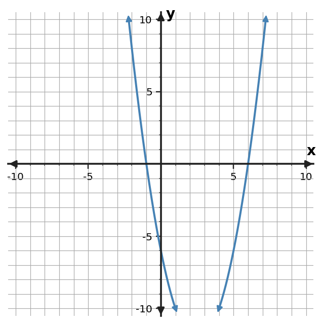

1. Solve $(x-7)(x+2)=0$.
2. Solve $(x-8)(x+3)=0$.
3. Solve $(x-9)(x+4)=0$.
4. Solve $(x-10)(x+5)=0$.
5. Write a factored quadratic equation with solutions $x=2$ and $x=-2$.
6. Write a factored quadratic equation with solutions $x=3$ and $x=-3$.
7. Write a factored quadratic equation with solutions $x=4$ and $x=-4$.
8. Write a factored quadratic equation with solutions $x=5$ and $x=-5$.
9. Solve $(x-9)^2=0$ and state what the repeated solution means for the graph.
10. Solve $(x-10)^2=0$ and state what the repeated solution means for the graph.
11. Solve $(x-5)^2=0$ and state what the repeated solution means for the graph.
12. Solve $(x-6)^2=0$ and state what the repeated solution means for the graph.
13. Use the graph to solve $f(x)=0$.

14. Use the table to identify the zeros and write a monic factored model.
| $x$ | $y$ |
|---|---|
| $-5$ | $0$ |
| $-4$ | $-9$ |
| $0$ | $-25$ |
| $4$ | $-9$ |
| $5$ | $0$ |
15. A height model is $h(t)=-5(t+1)(t-7)$. Solve $h(t)=0$ and identify the physically meaningful nonnegative time.
16. A student solves $(x-8)(x+4)=0$ and reports $x=-8,4$. Diagnose the error and give the correct solutions.
17. For $f(x)=(x+6)(x-7)$, state the zeros and x-intercepts.
18. A quadratic graph crosses the $x$-axis at $x=-4$ and $x=7$. Write a monic factored form.
19. Explain the connection among a factor $(x-8)$, the zero $x=8$, and the graph.
20. Write a factored form with zeros $-6$ and $3$, then verify both zeros by substitution.
21. For $f(x)=(x-4)(x+7)$, state the $x$-intercepts and direction of opening.
22. A student claims $g(x)=-(x+3)^2+5$ opens upward. Critique the claim.
23. Which feature is most visible in $h(x)=-2(x-6)^2-3$? State it.
24. Connect $p(x)=(x+5)(x-4)$ to two graph features.